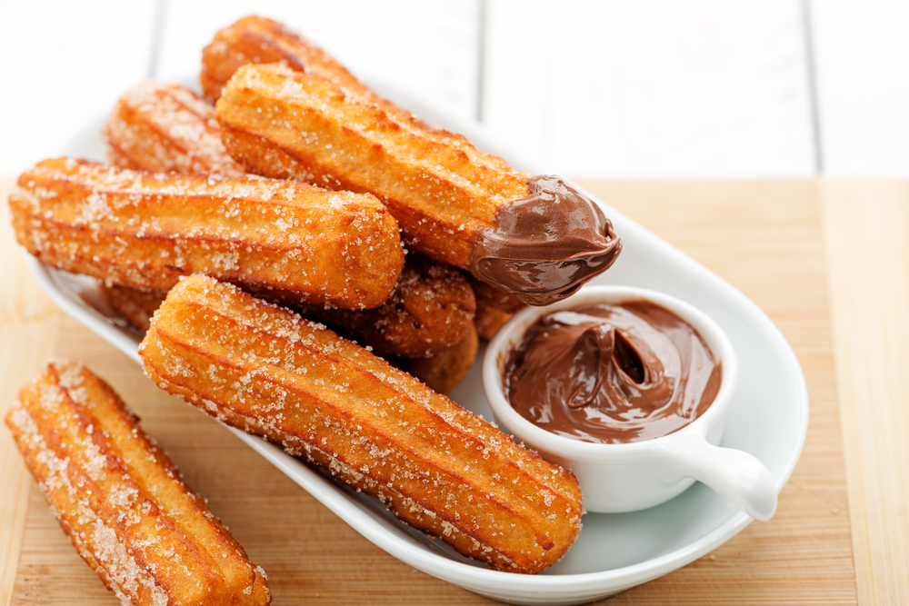

Churros

Description
Learn how to make delicious churros!
Here is how:
Ingredients
- quarts vegetable oil for frying
- 1 cup water
- ½ cup margarine
- ... and so on
Steps
- In a heavy deep skillet or deep-fryer, heat oil to 360 degrees F (180 degrees C). Oil should be about 1 1/2 inches deep.
- In a medium saucepan, heat water and margarine to a rolling boil. Combine the flour and salt; stir into the boiling mixture. Reduce heat to low and stir vigorously until the mixture forms a ball, about 1 minute. Remove from heat and beat in the eggs one at a time. Spoon the mixture into a pastry bag fitted with a large star tip.
- ... and so on